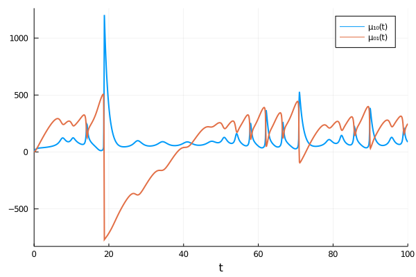
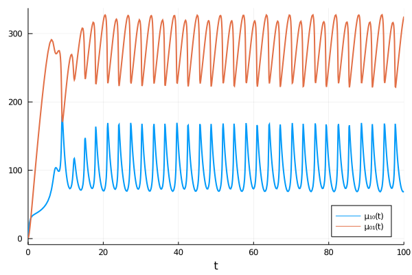
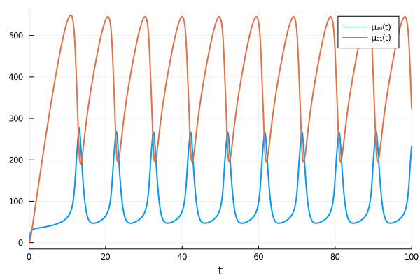
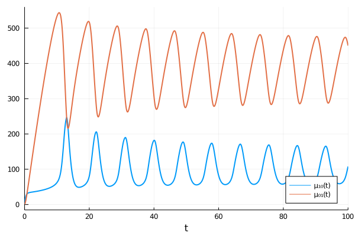
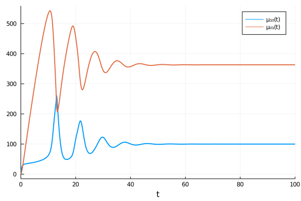
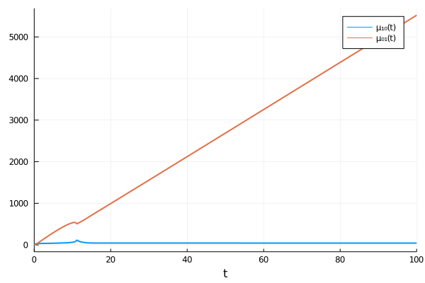
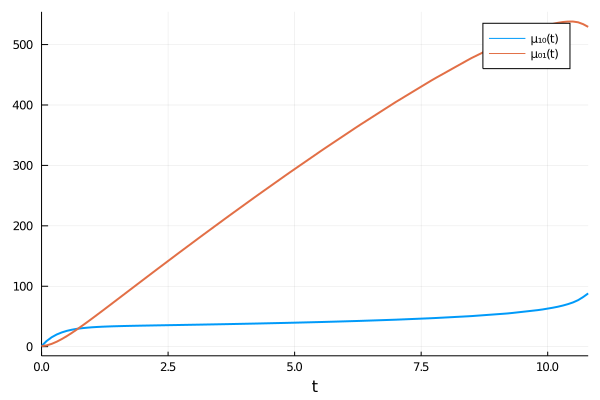

Common Issues
Moment closure approximations are based on ad hoc assumptions and no rigorous and general predictions can be made on whether the results will be accurate or even physically meaningful [1-2]. Moreover, the truncated moment equations are prone to numerical instabilities and it may not be possible to solve them for the entire time course [3]. In this tutorial, we walk through a number of such issues encountered in the analysis of the Brusselator model introduced in the previous tutorial.
We first redefine the system and its parameters for completeness:
using MomentClosure, Catalyst, OrdinaryDiffEq, Plots
rn = @reaction_network begin
@parameters c₁ c₂ c₃ c₄ Ω
(c₁/Ω^2), 2X + Y → 3X
(c₂), X → Y
(c₃*Ω, c₄), 0 ↔ X
end
pmap = [:c₁ => 0.9, :c₂ => 2, :c₃ => 1, :c₄ => 1, :Ω => 100]
u0map = [:X => 1, :Y => 1]
tspan = (0., 100.)
raw_eqs = generate_raw_moment_eqs(rn, 2, combinatoric_ratelaws=false)As we have seen earlier, second-order moment expansion using normal closure approximates the true system dynamics sufficiently accurately but it's interesting to see how other closures compare. Let's try applying zero closure:
closed_raw_eqs = moment_closure(raw_eqs, "zero")
oprob = ODEProblem(closed_raw_eqs, u0map, tspan, pmap)
sol = solve(oprob, Tsit5(), saveat=0.1)
plot(sol, idxs=[1,2], lw=2)
The trajectory of $μ₀₁$ becomes negative and so zero closure fails to provide physically meaningful results for this parameter set. Note that is important to correctly choose the ODE solver depending on the stiffness of the system and the accuracy required. We tried a number of recommended DifferentialEquations solvers here but none seemed to improve the results.
Let's apply log-normal closure next:
closed_raw_eqs = moment_closure(raw_eqs, "log-normal")
oprob = ODEProblem(closed_raw_eqs, u0map, tspan, pmap)
sol = solve(oprob, Tsit5(), saveat=0.1)
plot(sol, idxs=[1,2], lw=2, legend=:bottomright)
We observe sustained oscillatory behaviour instead of the expected damped oscillations. This result is unphysical: single SSA trajectories (that may display sustained oscillations) get dephased over time and hence the ensemble average should always show damped or overdamped oscillations [1].
Normal closure is also quite fragile. This can be seen by simply including the combinatorial scaling of the mass-action propensity functions with combinatoric_ratelaw=true which leads to unphysical sustained oscillatory trajectories:
raw_eqs = generate_raw_moment_eqs(rn, 2, combinatoric_ratelaws=true)
closed_raw_eqs = moment_closure(raw_eqs, "normal")
oprob = ODEProblem(closed_raw_eqs, u0map, tspan, pmap)
sol = solve(oprob, Tsit5(), saveat=0.1)
plot(sol, idxs=[1,2], lw=2)
Nevertheless, this can be improved upon by increasing the order of moment expansion:
raw_eqs = generate_raw_moment_eqs(rn, 3, combinatoric_ratelaws=true)
closed_raw_eqs = moment_closure(raw_eqs, "normal")
oprob = ODEProblem(closed_raw_eqs, u0map, tspan, pmap)
sol = solve(oprob, Tsit5(), saveat=0.1)
plot(sol, idxs=[1,2], lw=2, legend=:bottomright)
Some dampening in the system is now visible. Increasing the expansion order to 4 finally leads to physically sensible results:
raw_eqs = generate_raw_moment_eqs(rn, 4, combinatoric_ratelaws=true)
closed_raw_eqs = moment_closure(raw_eqs, "normal")
oprob = ODEProblem(closed_raw_eqs, u0map, tspan, pmap)
sol = solve(oprob, Tsit5(), saveat=0.1)
plot(sol, idxs=[1,2], lw=2)
For dessert, we consider unphysical divergent trajectories—a frequent problem with moment equations [3]. A good example is the second-order moment expansion including the combinatorial scaling of propensities with log-normal closure applied:
raw_eqs = generate_raw_moment_eqs(rn, 2, combinatoric_ratelaws=true)
closed_raw_eqs = moment_closure(raw_eqs, "log-normal")
oprob = ODEProblem(closed_raw_eqs, u0map, tspan, pmap)
sol = solve(oprob, Rodas4P(), saveat=0.1)
plot(sol, idxs=[1,2], lw=2)
In contrast to normal closure, increasing the expansion order makes the problem worse:
raw_eqs = generate_raw_moment_eqs(rn, 3, combinatoric_ratelaws=true)
closed_raw_eqs = moment_closure(raw_eqs, "log-normal")
oprob = ODEProblem(closed_raw_eqs, u0map, tspan, pmap)
sol = solve(oprob, Rodas4P(), saveat=0.1)
plot(sol, idxs=[1,2], lw=2)┌ Warning: Interrupted. Larger maxiters is needed.
└ @ SciMLBase C:\Users\asukys\.julia\packages\SciMLBase\Afx1r\src\integrator_interface.jl:331
Note that the solver throws a warning being unable to evaluate the trajectories for the entire time course (other solvers perform similarly in this case). This usually implies that the moment ODE system is too stiff and cannot be solved: the time derivatives grow unboundedly and the solver timestep is being constantly reduced, requiring an ever-increasing number of the solver iterations (hence the maxiters warning).
References
[1]: D. Schnoerr, G. Sanguinetti, and R. Grima, "Comparison of different moment-closure approximations for stochastic chemical kinetics", The Journal of Chemical Physics 143, 185101 (2015). https://doi.org/10.1063/1.4934990
[2]: D. Schnoerr, G. Sanguinetti, and R. Grima, "Validity conditions for moment closure approximations in stochastic chemical kinetics", The Journal of Chemical Physics 141, 084103 (2014). https://doi.org/10.1063/1.4892838
[3]: E. Lakatos, A. Ale, P. D. W. Kirk, and M. P. H. Stumpf, "Multivariate moment closure techniques for stochastic kinetic models", The Journal of Chemical Physics 143, 094107 (2015). https://doi.org/10.1063/1.4929837